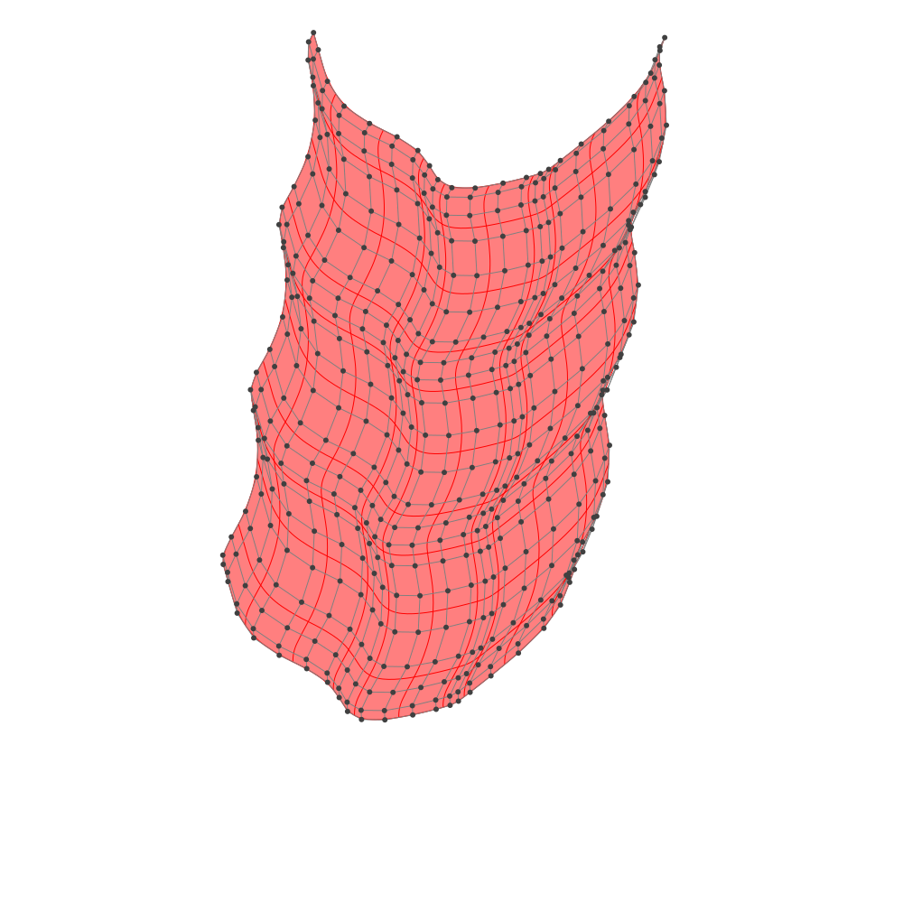
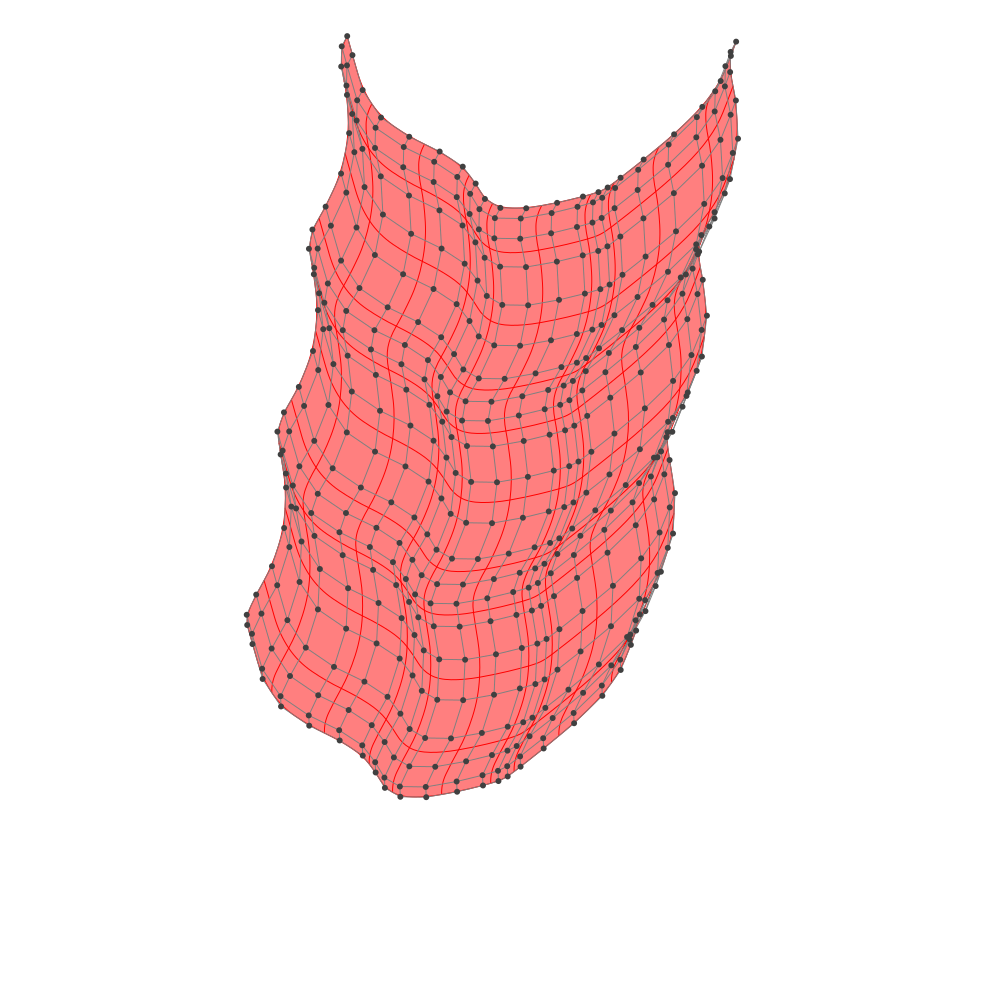

Fitting with B-spline manifold
Fitting with least squares method.
BasicBSpline.fittingcontrolpoints — Function- func: Real -> ℝ-vector space
- func: (Real,Real) -> ℝ-vector space
- func: (Real,Real,Real) -> ℝ-vector space
Try on Desmos graphing graphing calculator!
julia> p1 = 22julia> p2 = 22julia> k1 = KnotVector(-10:10)+p1*KnotVector(-10,10)KnotVector([-10.0, -10.0, -10.0, -9.0, -8.0, -7.0, -6.0, -5.0, -4.0, -3.0, -2.0, -1.0, 0.0, 1.0, 2.0, 3.0, 4.0, 5.0, 6.0, 7.0, 8.0, 9.0, 10.0, 10.0, 10.0])julia> k2 = KnotVector(-10:10)+p2*KnotVector(-10,10)KnotVector([-10.0, -10.0, -10.0, -9.0, -8.0, -7.0, -6.0, -5.0, -4.0, -3.0, -2.0, -1.0, 0.0, 1.0, 2.0, 3.0, 4.0, 5.0, 6.0, 7.0, 8.0, 9.0, 10.0, 10.0, 10.0])julia> P1 = BSplineSpace{p1}(k1)BSplineSpace{2, Float64}(KnotVector([-10.0, -10.0, -10.0, -9.0, -8.0, -7.0, -6.0, -5.0, -4.0, -3.0, -2.0, -1.0, 0.0, 1.0, 2.0, 3.0, 4.0, 5.0, 6.0, 7.0, 8.0, 9.0, 10.0, 10.0, 10.0]))julia> P2 = BSplineSpace{p2}(k2)BSplineSpace{2, Float64}(KnotVector([-10.0, -10.0, -10.0, -9.0, -8.0, -7.0, -6.0, -5.0, -4.0, -3.0, -2.0, -1.0, 0.0, 1.0, 2.0, 3.0, 4.0, 5.0, 6.0, 7.0, 8.0, 9.0, 10.0, 10.0, 10.0]))julia> f(u1, u2) = SVector(2u1 + sin(u1) + cos(u2) + u2 / 2, 3u2 + sin(u2) + sin(u1) / 2 + u1^2 / 6) / 5f (generic function with 1 method)julia> a = fittingcontrolpoints(f, (P1, P2))22×22 Matrix{StaticArrays.SVector{2, Float64}}: [-5.05588, -2.50058] [-5.06536, -2.29557] … [-3.05588, 9.27797] [-4.95087, -2.88141] [-4.96035, -2.6764] [-2.95087, 8.89714] [-4.74724, -3.57959] [-4.75671, -3.37459] [-2.74724, 8.19896] [-4.37961, -4.12911] [-4.38909, -3.92411] [-2.37961, 7.64944] [-3.81531, -4.51363] [-3.82479, -4.30862] [-1.81531, 7.26492] [-3.20658, -4.80927] [-3.21606, -4.60426] … [-1.20658, 6.96928] [-2.74482, -5.11172] [-2.7543, -4.90671] [-0.744824, 6.66683] [-2.48703, -5.44949] [-2.49651, -5.24448] [-0.487032, 6.32906] [-2.30237, -5.75716] [-2.31185, -5.55215] [-0.302368, 6.02139] [-1.99289, -5.93575] [-2.00237, -5.73075] [0.00710538, 5.84279] ⋮ ⋱ [-0.0308372, -5.62139] [-0.0403156, -5.41639] [1.96916, 6.15716] [0.153827, -5.52906] [0.144348, -5.32405] [2.15383, 6.24949] [0.411619, -5.3335] [0.40214, -5.12849] … [2.41162, 6.44505] [0.87338, -4.96928] [0.863901, -4.76428] [2.87338, 6.80927] [1.48211, -4.46492] [1.47263, -4.25992] [3.48211, 7.31363] [2.04641, -3.9161] [2.03693, -3.7111] [4.04641, 7.86245] [2.41403, -3.39896] [2.40455, -3.19395] [4.41403, 8.37959] [2.61767, -2.89714] [2.60819, -2.69213] … [4.61767, 8.88141] [2.72267, -2.6113] [2.71319, -2.4063] [4.72267, 9.16724]julia> M = BSplineManifold(a, (P1, P2))BSplineManifold{2, (2, 2), StaticArrays.SVector{2, Float64}, Tuple{BSplineSpace{2, Float64}, BSplineSpace{2, Float64}}}((BSplineSpace{2, Float64}(KnotVector([-10.0, -10.0, -10.0, -9.0, -8.0, -7.0, -6.0, -5.0, -4.0, -3.0, -2.0, -1.0, 0.0, 1.0, 2.0, 3.0, 4.0, 5.0, 6.0, 7.0, 8.0, 9.0, 10.0, 10.0, 10.0])), BSplineSpace{2, Float64}(KnotVector([-10.0, -10.0, -10.0, -9.0, -8.0, -7.0, -6.0, -5.0, -4.0, -3.0, -2.0, -1.0, 0.0, 1.0, 2.0, 3.0, 4.0, 5.0, 6.0, 7.0, 8.0, 9.0, 10.0, 10.0, 10.0]))), StaticArrays.SVector{2, Float64}[[-5.055876828897997, -2.5005780222443064] [-5.065355223940006, -2.2955730784359156] … [-3.165355223940014, 9.072965508050837] [-3.0558768288979983, 9.277970451859215]; [-4.950871885089589, -2.8814088836734464] [-4.96035028013163, -2.6764039398650477] … [-3.060350280131639, 8.692134646621682] [-2.9508718850895876, 8.897139590430093]; … ; [2.6176667013971437, -2.897139590430077] [2.6081883063551223, -2.6921346466216916] … [4.5081883063551125, 8.676403939865079] [4.617666701397139, 8.881408883673416]; [2.7226716452055326, -2.611303785192542] [2.7131932501634997, -2.4062988413841615] … [4.61319325016351, 8.962239745102568] [4.722671645205537, 9.167244688910984]])julia> save_png("fitting.png", M, unitlength=50, xlims=(-10,10), ylims=(-10,10))
 
